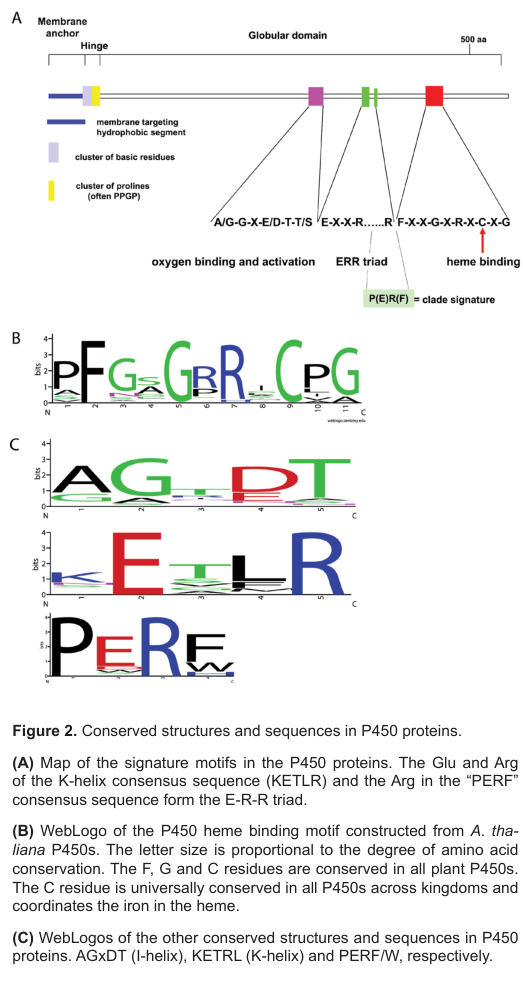

Cytochrome P450 71B1 is a heme-thiolate cytochrome P450 monooxygenase of field pennycress, a member of the CYP71 clan that dominates plant specialized (defense) metabolism. It was identified as a full-length cDNA cloned from Thlaspi arvense in 1994, but its substrate, catalyzed reaction, metabolic pathway, expression pattern, and subcellular localization have not been experimentally determined. Based on conserved P450 architecture it is predicted to catalyze NADPH- and O2-dependent oxidation of an organic substrate using a heme cofactor, with the heme iron coordinated by a conserved axial cysteine; like most plant P450s it is expected, but not shown, to be anchored to the endoplasmic reticulum membrane.
| GO Term | Evidence | Action | Reason |
|---|---|---|---|
|
GO:0004497
monooxygenase activity
|
IEA
GO_REF:0000002 |
ACCEPT |
Summary: Well-supported family-level inference. The protein has canonical cytochrome P450 domain architecture (Pfam PF00067), and plant P450s are heme-thiolate monooxygenases. The specific substrate and reaction are unknown, but monooxygenase activity is a sound conservative annotation.
Supporting Evidence:
file:THLAR/CYP71B1/CYP71B1-deep-research-falcon.md
Plant cytochrome P450s are heme-thiolate monooxygenases that catalyze oxygenation reactions
|
|
GO:0005506
iron ion binding
|
IEA
GO_REF:0000002 |
ACCEPT |
Summary: Correct. The P450 catalytic center binds an iron-containing heme; UniProt annotates an axial heme iron-binding residue at position 436. Iron ion binding is appropriate, captured more specifically by the heme binding annotation.
Supporting Evidence:
file:THLAR/CYP71B1/CYP71B1-deep-research-falcon.md
a conserved cysteine coordinates the heme iron in the P450 catalytic center
|
|
GO:0016705
oxidoreductase activity, acting on paired donors, with incorporation or reduction of molecular oxygen
|
IEA
GO_REF:0000002 |
ACCEPT |
Summary: Correct and standard for a cytochrome P450 monooxygenase, which uses molecular oxygen with NADPH as the paired electron donor. Conservative family-level inference.
Supporting Evidence:
file:THLAR/CYP71B1/CYP71B1-deep-research-falcon.md
RH + O2 + NADPH + H+ -> ROH + H2O + NADP+
|
|
GO:0020037
heme binding
|
IEA
GO_REF:0000002 |
ACCEPT |
Summary: Correct. Cytochrome P450s are heme-thiolate proteins; UniProt annotates the axial heme iron-binding residue (position 436). This is the most specific cofactor annotation and underpins the monooxygenase activity.
Supporting Evidence:
file:THLAR/CYP71B1/CYP71B1-deep-research-falcon.md
P450s share a conserved catalytic center in which a conserved cysteine coordinates the heme iron
|
Q: What substrate(s) and reaction does Thlaspi arvense CYP71B1 catalyze, and in which pathway (e.g. glucosinolate, indole/camalexin-type, or other specialized metabolism) does it act?
Q: Is CYP71B1 anchored to the endoplasmic reticulum membrane, as is typical for CYP71-clan plant P450s?
Experiment: Heterologously express CYP71B1 (e.g. in yeast or N. benthamiana microsomes with a plant cytochrome P450 reductase) and screen candidate substrates from Brassicaceae specialized metabolism (indole/tryptophan-derived intermediates, glucosinolate precursors) by LC-MS to identify the catalyzed reaction.
Experiment: Determine subcellular localization with a fluorescent-protein fusion and test for an N-terminal ER membrane anchor.
The research report should be a detailed narrative explaining the function, biological processes, and localization of the gene product. Citations should be given for all claims.
You should prioritize authoritative reviews and primary scientific literature when conducting research. You can supplement
this with annotations you find in gene/protein databases, but these can be outdated or inaccurate.
We are specifically interested in the primary function of the gene - for enzymes, what reaction is catalyzed, and what is the substrate specificity? For transporters, what is the substrate? For structural proteins or adapters, what is the broader structural role? For signaling molecules, what is the role in the pathway.
We are interested in where in or outside the cell the gene product carries out its function.
We are also interested in the signaling or biochemical pathways in which the gene functions. We are less interested in broad pleiotropic effects, except where these elucidate the precise role.
Include evidence where possible. We are interested in both experimental evidence as well as inference from structure, evolution, or bioinformatic analysis. Precise studies should be prioritized over high-throughput, where available.
The target protein is Cytochrome P450 71B1 (gene CYP71B1) from Thlaspi arvense (field pennycress), UniProt P49264, belonging to the cytochrome P450 (CYP) superfamily and containing the canonical CYP domain architecture (Cyt_P450 / PF00067) indicated by UniProt context. Within the tool-retrieved literature, the strongest direct evidence for this specific pennycress CYP71B1 is a peer-reviewed review that catalogs it as a full-length cDNA associated with GenEMBL accession L24438 and cites the original Plant Physiology cloning note (1994). However, no direct biochemical reaction, substrate specificity, pathway placement, or experimentally demonstrated subcellular localization for pennycress CYP71B1 could be retrieved from the accessible sources. Therefore, any functional annotation beyond “microsomal plant P450 monooxygenase” must be treated as inference based on general plant P450 biology and on characterized CYP71-family members in related Brassicaceae (notably Arabidopsis). (schuler1996plantcytochromep450 pages 5-8, bak2011cytochromesp450 pages 3-5)
A key complication is symbol ambiguity: “CYP71B1” is also used for Arabidopsis loci (e.g., At1g13080 listed as a putative P450), and other Arabidopsis P450s are sometimes discussed with different names (e.g., MAX1 is CYP711A1), so the pennycress protein should not be conflated with Arabidopsis CYP71B1 or MAX1. (schuckel2012developmentofa pages 193-196, schuckel2012developmentofa pages 199-203)
| Evidence scope | Organism | Gene/Protein (incl. accession/locus) | Key finding (function/substrate/localization/role) | Data/statistics | Source (author year) | Publication date | URL/DOI | Notes on confidence/limitations |
|---|---|---|---|---|---|---|---|---|
| Direct | Thlaspi arvense | CYP71B1; GenEMBL accession L24438; UniProt target P49264 | Authoritative review catalogs T. arvense CYP71B1 as a full-length cDNA and links it to the original cloning note; this is the strongest direct evidence that the queried protein exists in field pennycress. No substrate, reaction, localization, or pathway assignment is provided in the accessible text. (schuler1996plantcytochromep450 pages 5-8) | Full-length cDNA reported; no functional assay statistics available in retrieved text. (schuler1996plantcytochromep450 pages 5-8) | Schuler 1996 | Jan 1996 | https://doi.org/10.1080/07352689609701942 | High confidence for identity/accession; very low confidence for biochemical function because the retrieved evidence is only a catalog entry citing Udvardi et al. 1994, not a functional study. |
| Inference / background | Plants; Arabidopsis emphasized | Plant CYPs broadly; Arabidopsis CYP71 family; related CYP71A/B members | Defines plant P450s as heme-thiolate monooxygenases; most plant P450s are membrane-bound and usually anchored on the cytoplasmic face of the ER. Arabidopsis has 244 P450 genes and 28 pseudogenes. The CYP71 clan is described as a major duplicated lineage involved in specialized metabolism; CYP71A13, CYP71A12, and CYP71B15 are linked to tryptophan-derived defense metabolism, supporting cautious inference that uncharacterized CYP71B1 may also act in specialized metabolism. (bak2011cytochromesp450 pages 1-3, bak2011cytochromesp450 pages 3-5, bak2011cytochromesp450 pages 12-13, bak2011cytochromesp450 pages 11-12) | 244 genes plus 28 pseudogenes in Arabidopsis; ER localization is the usual plant P450 context. (bak2011cytochromesp450 pages 1-3, bak2011cytochromesp450 pages 3-5) | Bak et al. 2011 | Oct 06 2011 | https://doi.org/10.1199/tab.0144 | Strong for general plant P450 properties and Arabidopsis family context; indirect for T. arvense CYP71B1 specifically. |
| Inference from characterized homologous pathway members | Arabidopsis thaliana | CYP71B15/PAD3, CYP71A13, CYP71A12, CYP83B1, CYP79B2/B3 | Demonstrates that characterized CYP71 enzymes can function in a camalexin metabolon on the ER and process indole-derived defense intermediates. CYP71B15/PAD3 performs a late camalexin step; CYP71A13 channels indole-3-acetaldoxime into camalexin biosynthesis; CYP71A12 contributes in roots. Supports the idea that CYP71 family members often act on specialized-metabolism substrates and may participate in multiprotein complexes. (mucha2019theformationof pages 3-4, mucha2019theformationof pages 2-3, mucha2019theformationof pages 4-5) | CYP71B15 is the strongest co-IP signal in the metabolon study; about 22 P450s co-purified; PAD3 localized in cells adjacent to infection sites; one associated enzyme, NITRILASE3, showed about 7-fold change in the cited excerpt. (mucha2019theformationof pages 3-4, mucha2019theformationof pages 2-3, mucha2019theformationof pages 4-5) | Mucha et al. 2019 | Sep 2019 | https://doi.org/10.1105/tpc.19.00403 | Strong for Arabidopsis camalexin-pathway CYP71s; only suggestive for pennycress CYP71B1 because orthology and substrate equivalence are unproven. |
| Ambiguity warning / indirect | Arabidopsis thaliana | CYP71B1 / 71B1 (At1g13080) in Arabidopsis table; nearby CYP71B7 and CYP71B15 entries | Appendix-style Arabidopsis table lists 71B1 (At1g13080) only as a putative P450, with no reaction, substrate, pathway, or localization. Neighboring CYP71 family members do have activities, for example CYP71B7 deethylates 7-ethoxycoumarin and CYP71B15 converts dihydrocamalexic acid to camalexin, underscoring that family membership alone does not specify function. (schuckel2012developmentofa pages 193-196, schuckel2012developmentofa pages 39-41) | No direct statistics for AtCYP71B1; nearby entries show diverse CYP71 activities. (schuckel2012developmentofa pages 193-196, schuckel2012developmentofa pages 39-41) | Schückel 2012 | 2012 | No stable journal URL available in retrieved record | Useful mainly to show symbol ambiguity and lack of annotation even in Arabidopsis; should not be conflated with Thlaspi arvense CYP71B1. |
| Recent review / broad inference | Plants; grapevine example | CYP71 clan; CYP71BE example | Recent review states the CYP71 clan encompasses more than 50 percent of plant CYPs and is prominent in terpenoid metabolism. Gives a concrete functional example: CYP71BE oxidizes alpha-guaiene to rotundone, showing that CYP71 enzymes can catalyze highly specific oxidations in specialized metabolism affecting agriculturally relevant traits. (minerdi2024impactofcytochrome pages 11-13, minerdi2024impactofcytochrome pages 9-11, minerdi2024impactofcytochrome pages 1-2) | More than 50 percent of plant CYPs belong to CYP71 clan; grapevine was reported to have 579 CYP sequences with 279 complete genes in the review context. (minerdi2024impactofcytochrome pages 11-13, minerdi2024impactofcytochrome pages 9-11, minerdi2024impactofcytochrome pages 7-9) | Minerdi and Sabbatini 2024 | Jun 2024 | https://doi.org/10.3390/ijms25137181 | Good recent contextual evidence for CYP71 diversity and applications; does not identify pennycress CYP71B1 substrate. |
| Recent species resource / indirect | Thlaspi arvense var. MN106-Ref | Pennycress genome and annotation resources | Provides the modern genomic framework needed to revisit CYP71B1 annotation in pennycress: chromosome-level assembly, expression atlas, transcript evidence, and gene-model curation pipeline. Relevant because direct literature on CYP71B1 is sparse. (garrido2024theepigenomicimpact pages 133-133, garrido2024theepigenomicimpact pages 144-144, garrido2024theepigenomicimpact pages 151-151) | Assembly covers about 97.5 percent of an estimated 539 Mbp genome; seven large scaffolds represent about 83.6 percent of the genome; contig N50 improved from 0.02 Mbp to 13.3 Mbp; coding space is 98.7 percent BUSCO complete; expression atlas spans 11 tissues or life stages with mostly 3 biological replicates. (garrido2024theepigenomicimpact pages 133-133, garrido2024theepigenomicimpact pages 144-144) | Garrido 2024 | 2024 | No stable journal URL available in retrieved record | Strong for current pennycress genome quality and annotation infrastructure; no explicit CYP71B1-specific mention in available excerpts. |
| Recent translational context / indirect | Thlaspi arvense and weeds broadly | Thlaspi genome resource; comparative weed multi-omics | Reviews modern weed and crop multi-omics and cites a chromosome-level T. arvense genome as a tool for translational research and domestication. Supports the idea that current annotation of pennycress genes, including orphan P450s, can be improved using genome, transcriptome, and regulatory datasets. (chen2024weedbiologyand pages 16-17, chen2024weedbiologyand pages 17-18) | Excerpts mention pan-genome analysis of 33 accessions or species in one cited context and 13 domesticated and wild rice relatives in another; no CYP71-specific counts for pennycress. (chen2024weedbiologyand pages 17-18) | Chen et al. 2024 | Apr 2024 | https://doi.org/10.1016/j.xplc.2024.100816 | High value for current methodological context; low direct relevance to CYP71B1 biochemistry. |
| Recent ecological context / indirect | Herbivore on Thlaspi arvense versus native host | Detoxification gene families including cytochrome P450s in Pieris macdunnoughii larvae feeding on pennycress | Shows pennycress is a toxic host context where detoxification pathways are relevant, but larval cytochrome P450 genes were not significantly differentially expressed versus the native host. This does not annotate pennycress CYP71B1 directly, but supports a defense-metabolism ecological setting for Brassicaceae specialized chemistry. (ravikanthachari2024geneticmechanismsunderlying pages 12-15, ravikanthachari2024geneticmechanismsunderlying pages 15-18, ravikanthachari2024geneticmechanismsunderlying pages 8-12, ravikanthachari2024geneticmechanismsunderlying pages 5-8) | About 20 million paired reads per library, about 40 million total, with 94 percent mapping; 1,489 genes differentially expressed at FDR below 0.01; 910 genes with log2 fold change above 1.5 and FDR below 0.01; cytochrome P450 trend p = 0.09 and not significant; GST p < 0.001; trypsin p = 0.002; 2,353 genes associated with T. arvense modules in WGCNA. (ravikanthachari2024geneticmechanismsunderlying pages 12-15, ravikanthachari2024geneticmechanismsunderlying pages 8-12, ravikanthachari2024geneticmechanismsunderlying pages 5-8) | Feb 2024 | https://doi.org/10.1101/2024.02.14.580222 | Useful ecological backdrop only; measures insect gene expression, not plant CYP71B1 expression or function. |
Table: This table compiles direct and indirect evidence relevant to functional annotation of Thlaspi arvense CYP71B1 (UniProt P49264). It separates direct identity evidence from broader family- and species-level inferences, making clear where confidence is strong and where annotation remains provisional.
Plant cytochrome P450s are heme-thiolate monooxygenases that catalyze oxygenation and other oxidative transformations, typically described by the overall monooxygenase reaction:
[ RH + O_2 + NADPH + H^+ \rightarrow ROH + H_2O + NADP^+ ]
and they share a conserved catalytic center in which a conserved cysteine coordinates the heme iron. (bak2011cytochromesp450 pages 3-5)
Functional annotation of CYP sequences often leverages conserved motifs characteristic of P450 fold and catalytic mechanism. Key motifs highlighted in authoritative sources include:
- The heme-binding cysteine motif (Cys is universally conserved and coordinates heme iron) (bak2011cytochromesp450 pages 3-5)
- The I-helix motif (e.g., AGxDT) (bak2011cytochromesp450 pages 3-5)
- The K-helix motif including EXXR (e.g., KETRL/KETLR context; EXXR noted in a 2024 review) (bak2011cytochromesp450 pages 3-5, minerdi2024impactofcytochrome pages 1-2)
- The PERF/W motif (forms, with K-helix residues, an E–R–R triad) (bak2011cytochromesp450 pages 3-5)
These motifs support the classification of CYP71B1 as a bona fide cytochrome P450 monooxygenase (consistent with UniProt/InterPro domain context) even when substrate specificity is unknown.
Most characterized plant P450s are membrane-bound, commonly anchored to the cytoplasmic surface of the endoplasmic reticulum (ER) by an N-terminal hydrophobic segment, and require electron transfer from ER-associated partners such as NADPH-cytochrome P450 reductase (CPR) and/or cytochrome b5. (bak2011cytochromesp450 pages 3-5)
A minority of plant P450s are predicted or confirmed to localize to plastids or mitochondria via targeting peptides, but the dominant paradigm for “CYP71 clan” enzymes is microsomal/ER association. (bak2011cytochromesp450 pages 3-5)
The CYP71 clan is repeatedly emphasized as a major driver of plant specialized metabolism. A 2024 review states that the CYP71 clan encompasses more than 50% of plant CYPs, highlighting its expansion and functional breadth across specialized-metabolism pathways. (minerdi2024impactofcytochrome pages 9-11)
A peer-reviewed review of plant P450s explicitly catalogs Thlaspi arvense CYP71B1 as a full-length cDNA, associated with GenEMBL accession L24438, and cites the original Plant Physiology publication (1994, 105:755–756) as the source of the cDNA sequence report. This provides direct evidence that the gene/protein sequence was cloned and deposited, consistent with the UniProt accession P49264 provided by the user. (schuler1996plantcytochromep450 pages 5-8)
Within the accessible texts, there is no direct experimental evidence for:
- Substrate(s) or reaction catalyzed by pennycress CYP71B1
- Specific pathway placement (e.g., glucosinolate, phytoalexin, hormone pathways)
- Tissue-, development-, or stress-specific expression for CYP71B1
- Subcellular localization of the pennycress protein (ER vs plastid vs other)
Thus, primary function and substrate specificity remain unknown from the retrieved direct literature.
Multiple CYP71-family enzymes are experimentally positioned in the camalexin (tryptophan-derived phytoalexin) pathway in Arabidopsis:
- CYP71A13 converts indole-3-acetaldoxime toward indole-3-acetonitrile, channeling a branchpoint intermediate into camalexin biosynthesis; mutants show impaired camalexin accumulation and altered pathogen susceptibility. (bak2011cytochromesp450 pages 12-13, bak2011cytochromesp450 pages 11-12)
- CYP71A12 contributes in roots and is inducible by bacterial elicitors (Flg22). (bak2011cytochromesp450 pages 12-13)
- CYP71B15/PAD3 is a key late enzyme: biochemical work and mutant phenotypes place it downstream in camalexin production, with in vitro evidence for conversion of cysteine–indole-3-acetonitrile-derived intermediates to camalexin; pad3 mutants are camalexin-deficient and accumulate pathway intermediates. (bak2011cytochromesp450 pages 12-13, mucha2019theformationof pages 2-3)
A 2019 Plant Cell study further supports that these enzymes act within a coordinated multi-protein context (“metabolon”). It reports that a functional PAD3/CYP71B15-GFP fusion localizes to the ER and accumulates in cells near infection sites, and proteomics/co-IP shows enrichment of multiple P450 partners (including CYP71A13 and CYP71A12), consistent with substrate channeling among indole-derived intermediates. (mucha2019theformationof pages 2-3, mucha2019theformationof pages 4-5)
Inference relevance to pennycress CYP71B1: Because pennycress is a Brassicaceae species and CYP71-family expansions are often linked to specialized metabolism, one plausible hypothesis is that pennycress CYP71B1 could act on specialized-metabolism substrates, potentially including indole-derived or other defense-related compounds. However, CYP71 family membership alone does not identify substrates, and even in Arabidopsis some CYP71B members remain “putative.” (bak2011cytochromesp450 pages 11-12, schuckel2012developmentofa pages 193-196)
Given the general plant P450 paradigm (ER membrane anchoring via N-terminus), a working hypothesis is that pennycress CYP71B1 is likely microsomal/ER-associated, unless a cleavable transit peptide indicates plastid/mitochondrial targeting. This inference is supported by general plant P450 localization principles and by ER localization demonstrated for the Brassicaceae CYP71B enzyme PAD3/CYP71B15. (bak2011cytochromesp450 pages 3-5, mucha2019theformationof pages 2-3)
Even within CYP71-family members, experimentally documented activities are diverse (e.g., pathway-specific camalexin steps vs xenobiotic transformations in assay contexts). A table-based resource lists CYP71B7 deethylation of 7-ethoxycoumarin in vitro and CYP71B15 camalexin formation, while other CYP71 members remain only “putative,” illustrating that subfamily labels do not uniquely determine substrates. (schuckel2012developmentofa pages 39-41, schuckel2012developmentofa pages 193-196)
A 2024 review focusing on fruit quality emphasizes that the CYP71 clan comprises >50% of plant CYPs and highlights CYP71 enzymes in terpenoid oxidation with a concrete example: grapevine CYP71BE oxidizes α-guaiene to produce rotundone, an aroma-impact compound. This illustrates (i) the enormous scale of CYP71 diversification and (ii) real-world relevance of CYP71 enzymes to agriculturally important traits, and it supports the idea that CYP71-family enzymes can be targets for metabolic engineering even when individual members are initially uncharacterized. (minerdi2024impactofcytochrome pages 9-11)
A 2024 pennycress genomics resource describes a chromosome-scale assembly (T_arvense_v2) covering ~97.5% of an estimated 539 Mbp genome and reporting 98.7% BUSCO completeness of coding space. It includes robust annotations, a transcriptome-based gene expression atlas spanning 11 tissues/life stages, DNA methylomes (root and shoot), and resequencing of 40 accessions, plus an annotation pipeline combining Illumina RNA-seq, PacBio Iso-Seq, MAKER-P, PFAM/InterPro support, and orthology mapping. Collectively, these resources can be used to improve the functional annotation of gene families like CYPs (including CYP71B1) via co-expression, comparative genomics, and variant–trait association, even when direct enzymology is missing. (garrido2024theepigenomicimpact pages 133-133, garrido2024theepigenomicimpact pages 144-144, garrido2024theepigenomicimpact pages 141-141)
A 2024 Plant Communications perspective on weed biology/multi-omics notes that a chromosome-level Thlaspi arvense genome provides tools for translational research and domestication of a cash cover crop, and it highlights emerging approaches such as Pan-3D genome analysis (2023) for connecting genome structure to function. Such approaches can help resolve tandemly duplicated gene families (like CYP71) and refine gene models and regulatory inference. (chen2024weedbiologyand pages 16-17)
CYP71-family enzymes can control economically important specialized metabolites; the 2024 fruit-quality review frames P450s (including CYP71 clan members) as engineering targets for modifying quality-related traits such as aroma and ripening chemistry. The CYP71BE→rotundone example illustrates the mechanistic bridge from enzyme activity to sensory traits in wine/grapes. (minerdi2024impactofcytochrome pages 9-11)
The camalexin pathway work provides a real-world mechanism for how plant CYP71 enzymes are deployed: CYP71B15/PAD3 is inducible by pathogen attack, ER-localized, and participates in a physically associated enzyme network (metabolon), supporting rapid and localized production of defense compounds. This provides a conceptual model for how a Brassicaceae CYP71B enzyme (by inference, potentially including pennycress CYP71B1) could function in vivo. (mucha2019theformationof pages 2-3, mucha2019theformationof pages 4-5)
Although not about pennycress CYP71B1 directly, the 2024 weed multi-omics perspective highlights functional characterization of herbicide-metabolizing P450s (e.g., CYP81A variants) and enzyme-library approaches, providing a blueprint for how “orphan” P450s can be functionally annotated through systematic screening. (chen2024weedbiologyand pages 17-18)
The Arabidopsis Book chapter emphasizes that Arabidopsis contains 244 P450 genes and 28 pseudogenes and argues that diversification leads to limited functional redundancy and mirrors metabolic complexity; consequently, uncharacterized CYP71 members may have specialized and non-obvious substrates, motivating direct experimental testing rather than name-based inference. (bak2011cytochromesp450 pages 1-3)
Given the direct evidence is restricted to sequence existence (full-length cDNA) and family membership, the most defensible functional label at present is:
- Microsomal cytochrome P450 monooxygenase (CYP71 clan; A-type plant P450)
- Catalyzes an oxidative transformation using electrons delivered via NADPH-dependent reductase partners
- Likely ER-associated via N-terminal hydrophobic anchor (hypothesis)
This aligns with expert synthesis of plant P450 biology and avoids over-claiming a substrate or pathway. (bak2011cytochromesp450 pages 3-5)
Based on characterized Brassicaceae CYP71 enzymes, the most tractable and biologically plausible hypotheses to test for pennycress CYP71B1 include:
1) Activity on tryptophan-derived indole intermediates (e.g., indole-3-acetaldoxime/IAN-related chemistry) and/or related defense metabolites (inference from Arabidopsis CYP71A/B camalexin pathway). (bak2011cytochromesp450 pages 12-13, mucha2019theformationof pages 2-3)
2) ER localization and potential participation in inducible enzyme complexes (metabolon-like organization), especially under pathogen/stress induction (inference from PAD3/CYP71B15 ER localization and interaction network). (mucha2019theformationof pages 2-3, mucha2019theformationof pages 4-5)
3) Broader aromatic/xenobiotic oxidation potential in vitro (supported by diverse activities reported for some CYP71 family members in assay contexts). (schuckel2012developmentofa pages 39-41)
A 2024 insect transcriptomic study using T. arvense as a “toxic” host provides context for Brassicaceae chemical defenses:
- ~20M paired reads per library; 94% mapping
- 1,489 genes differentially expressed at FDR<0.01
- Cytochrome P450 gene family differential expression: trend but not significant (p=0.09)
- Detoxification gene families: GST higher on native host (p<0.001); trypsin up on pennycress (p=0.002)
These data do not annotate pennycress CYP71B1 directly (they measure insect genes), but they underscore that pennycress-associated chemistry can impose strong stress/toxicity, providing biological motivation to study specialized metabolism genes (including P450s) in pennycress. (ravikanthachari2024geneticmechanismsunderlying pages 8-12, ravikanthachari2024geneticmechanismsunderlying pages 12-15)
CYP71B1 (UniProt P49264) from Thlaspi arvense is best annotated currently as an uncharacterized plant cytochrome P450 monooxygenase (CYP71 clan), represented by a full-length cDNA (GenEMBL L24438). (schuler1996plantcytochromep450 pages 5-8)
1) Heterologous expression (yeast/Nicotiana/plant microsomes) with NADPH-P450 reductase co-expression; confirm CO-difference spectrum and activity. (bak2011cytochromesp450 pages 3-5)
2) Substrate screening prioritized to Brassicaceae-specialized metabolites (indole-related compounds, glucosinolate-related intermediates, terpenoids), guided by co-expression patterns in the pennycress 11-tissue expression atlas and stress treatments. (garrido2024theepigenomicimpact pages 133-133)
3) Subcellular localization with fluorescent tags to test ER association and induction patterns. (mucha2019theformationof pages 2-3)
This report is constrained by tool-accessible full texts. The original primary source for the pennycress CYP71B1 cDNA (Plant Physiology 1994, 105:755–756) was not retrievable here, and UniProt/InterPro records were provided by the user but not directly fetched through tools. Consequently, substrate specificity and pathway membership for T. arvense CYP71B1 remain unresolved and should be treated as an open annotation problem requiring targeted experimental validation and/or genome-scale co-expression/phylogenomics using the 2024 pennycress multi-omics resources. (schuler1996plantcytochromep450 pages 5-8, garrido2024theepigenomicimpact pages 133-133)
References
(schuler1996plantcytochromep450 pages 5-8): Mary A. Schuler. Plant cytochrome p450 monooxygenases. Critical Reviews in Plant Sciences, 15:235-284, Jan 1996. URL: https://doi.org/10.1080/07352689609701942, doi:10.1080/07352689609701942. This article has 476 citations and is from a peer-reviewed journal.
(bak2011cytochromesp450 pages 3-5): Søren Bak, Fred Beisson, Gerard Bishop, Björn Hamberger, René Höfer, Suzanne Paquette, and Danièle Werck-Reichhart. Cytochromes p450. The Arabidopsis Book, 2011:e0144, Jan 2011. URL: https://doi.org/10.1199/tab.0144, doi:10.1199/tab.0144. This article has 529 citations and is from a peer-reviewed journal.
(schuckel2012developmentofa pages 193-196): J Schückel. Development of a new platform technology for plant cytochrome p450 fusions. Unknown journal, 2012.
(schuckel2012developmentofa pages 199-203): J Schückel. Development of a new platform technology for plant cytochrome p450 fusions. Unknown journal, 2012.
(bak2011cytochromesp450 pages 1-3): Søren Bak, Fred Beisson, Gerard Bishop, Björn Hamberger, René Höfer, Suzanne Paquette, and Danièle Werck-Reichhart. Cytochromes p450. The Arabidopsis Book, 2011:e0144, Jan 2011. URL: https://doi.org/10.1199/tab.0144, doi:10.1199/tab.0144. This article has 529 citations and is from a peer-reviewed journal.
(bak2011cytochromesp450 pages 12-13): Søren Bak, Fred Beisson, Gerard Bishop, Björn Hamberger, René Höfer, Suzanne Paquette, and Danièle Werck-Reichhart. Cytochromes p450. The Arabidopsis Book, 2011:e0144, Jan 2011. URL: https://doi.org/10.1199/tab.0144, doi:10.1199/tab.0144. This article has 529 citations and is from a peer-reviewed journal.
(bak2011cytochromesp450 pages 11-12): Søren Bak, Fred Beisson, Gerard Bishop, Björn Hamberger, René Höfer, Suzanne Paquette, and Danièle Werck-Reichhart. Cytochromes p450. The Arabidopsis Book, 2011:e0144, Jan 2011. URL: https://doi.org/10.1199/tab.0144, doi:10.1199/tab.0144. This article has 529 citations and is from a peer-reviewed journal.
(mucha2019theformationof pages 3-4): Stefanie Mucha, Stephanie Heinzlmeir, Verena Kriechbaumer, Benjamin Strickland, Charlotte Kirchhelle, Manisha Choudhary, Natalie Kowalski, Ruth Eichmann, Ralph Hueckelhoven, Erwin Grill, Bernhard Kuster, and Erich Glawischnig. The formation of a camalexin biosynthetic metabolon. Plant Cell, 31:2697-2710, Sep 2019. URL: https://doi.org/10.1105/tpc.19.00403, doi:10.1105/tpc.19.00403. This article has 101 citations and is from a highest quality peer-reviewed journal.
(mucha2019theformationof pages 2-3): Stefanie Mucha, Stephanie Heinzlmeir, Verena Kriechbaumer, Benjamin Strickland, Charlotte Kirchhelle, Manisha Choudhary, Natalie Kowalski, Ruth Eichmann, Ralph Hueckelhoven, Erwin Grill, Bernhard Kuster, and Erich Glawischnig. The formation of a camalexin biosynthetic metabolon. Plant Cell, 31:2697-2710, Sep 2019. URL: https://doi.org/10.1105/tpc.19.00403, doi:10.1105/tpc.19.00403. This article has 101 citations and is from a highest quality peer-reviewed journal.
(mucha2019theformationof pages 4-5): Stefanie Mucha, Stephanie Heinzlmeir, Verena Kriechbaumer, Benjamin Strickland, Charlotte Kirchhelle, Manisha Choudhary, Natalie Kowalski, Ruth Eichmann, Ralph Hueckelhoven, Erwin Grill, Bernhard Kuster, and Erich Glawischnig. The formation of a camalexin biosynthetic metabolon. Plant Cell, 31:2697-2710, Sep 2019. URL: https://doi.org/10.1105/tpc.19.00403, doi:10.1105/tpc.19.00403. This article has 101 citations and is from a highest quality peer-reviewed journal.
(schuckel2012developmentofa pages 39-41): J Schückel. Development of a new platform technology for plant cytochrome p450 fusions. Unknown journal, 2012.
(minerdi2024impactofcytochrome pages 11-13): Daniela Minerdi and Paolo Sabbatini. Impact of cytochrome p450 enzyme on fruit quality. International Journal of Molecular Sciences, 25:7181, Jun 2024. URL: https://doi.org/10.3390/ijms25137181, doi:10.3390/ijms25137181. This article has 7 citations.
(minerdi2024impactofcytochrome pages 9-11): Daniela Minerdi and Paolo Sabbatini. Impact of cytochrome p450 enzyme on fruit quality. International Journal of Molecular Sciences, 25:7181, Jun 2024. URL: https://doi.org/10.3390/ijms25137181, doi:10.3390/ijms25137181. This article has 7 citations.
(minerdi2024impactofcytochrome pages 1-2): Daniela Minerdi and Paolo Sabbatini. Impact of cytochrome p450 enzyme on fruit quality. International Journal of Molecular Sciences, 25:7181, Jun 2024. URL: https://doi.org/10.3390/ijms25137181, doi:10.3390/ijms25137181. This article has 7 citations.
(minerdi2024impactofcytochrome pages 7-9): Daniela Minerdi and Paolo Sabbatini. Impact of cytochrome p450 enzyme on fruit quality. International Journal of Molecular Sciences, 25:7181, Jun 2024. URL: https://doi.org/10.3390/ijms25137181, doi:10.3390/ijms25137181. This article has 7 citations.
(garrido2024theepigenomicimpact pages 133-133): A Contreras Garrido. The epigenomic impact of transposable elements in natural populations. Unknown journal, 2024.
(garrido2024theepigenomicimpact pages 144-144): A Contreras Garrido. The epigenomic impact of transposable elements in natural populations. Unknown journal, 2024.
(garrido2024theepigenomicimpact pages 151-151): A Contreras Garrido. The epigenomic impact of transposable elements in natural populations. Unknown journal, 2024.
(chen2024weedbiologyand pages 16-17): Ke Chen, Haona Yang, Di Wu, Yajun Peng, Lei Lian, Lianyang Bai, and Lifeng Wang. Weed biology and management in the multi-omics era: progress and perspectives. Apr 2024. URL: https://doi.org/10.1016/j.xplc.2024.100816, doi:10.1016/j.xplc.2024.100816. This article has 17 citations and is from a peer-reviewed journal.
(chen2024weedbiologyand pages 17-18): Ke Chen, Haona Yang, Di Wu, Yajun Peng, Lei Lian, Lianyang Bai, and Lifeng Wang. Weed biology and management in the multi-omics era: progress and perspectives. Apr 2024. URL: https://doi.org/10.1016/j.xplc.2024.100816, doi:10.1016/j.xplc.2024.100816. This article has 17 citations and is from a peer-reviewed journal.
(ravikanthachari2024geneticmechanismsunderlying pages 12-15): Nitin Ravikanthachari and Carol L. Boggs. Genetic mechanisms underlying preference-performance mismatches: insights from a specialized native herbivore on an invasive toxic plant. bioRxiv, Feb 2024. URL: https://doi.org/10.1101/2024.02.14.580222, doi:10.1101/2024.02.14.580222. This article has 1 citations.
(ravikanthachari2024geneticmechanismsunderlying pages 15-18): Nitin Ravikanthachari and Carol L. Boggs. Genetic mechanisms underlying preference-performance mismatches: insights from a specialized native herbivore on an invasive toxic plant. bioRxiv, Feb 2024. URL: https://doi.org/10.1101/2024.02.14.580222, doi:10.1101/2024.02.14.580222. This article has 1 citations.
(ravikanthachari2024geneticmechanismsunderlying pages 8-12): Nitin Ravikanthachari and Carol L. Boggs. Genetic mechanisms underlying preference-performance mismatches: insights from a specialized native herbivore on an invasive toxic plant. bioRxiv, Feb 2024. URL: https://doi.org/10.1101/2024.02.14.580222, doi:10.1101/2024.02.14.580222. This article has 1 citations.
(ravikanthachari2024geneticmechanismsunderlying pages 5-8): Nitin Ravikanthachari and Carol L. Boggs. Genetic mechanisms underlying preference-performance mismatches: insights from a specialized native herbivore on an invasive toxic plant. bioRxiv, Feb 2024. URL: https://doi.org/10.1101/2024.02.14.580222, doi:10.1101/2024.02.14.580222. This article has 1 citations.
(garrido2024theepigenomicimpact pages 141-141): A Contreras Garrido. The epigenomic impact of transposable elements in natural populations. Unknown journal, 2024.

UniProt: P49264 · EC 1.14.-.- · Taxon 13288 (Thlaspi arvense) · 496 aa
GenEMBL: L24438 · Family: cytochrome P450, CYP71 clan
All four GOA annotations are well-supported, conservative P450 family-level inferences →
ACCEPT all:
- GO:0004497 monooxygenase activity (IEA/InterPro)
- GO:0005506 iron ion binding (IEA/InterPro) — heme iron
- GO:0016705 oxidoreductase activity, acting on paired donors, O2 (IEA/InterPro)
- GO:0020037 heme binding (IEA/InterPro)
No BP or cellular-component annotation can be confidently assigned beyond the family
level; substrate identification is the key open question (see suggested experiments).
id: P49264
gene_symbol: CYP71B1
product_type: PROTEIN
status: COMPLETE
taxon:
id: NCBITaxon:13288
label: Thlaspi arvense
description: Cytochrome P450 71B1 is a heme-thiolate cytochrome P450 monooxygenase of
field pennycress, a member of the CYP71 clan that dominates plant specialized
(defense) metabolism. It was identified as a full-length cDNA cloned from Thlaspi
arvense in 1994, but its substrate, catalyzed reaction, metabolic pathway, expression
pattern, and subcellular localization have not been experimentally determined. Based
on conserved P450 architecture it is predicted to catalyze NADPH- and O2-dependent
oxidation of an organic substrate using a heme cofactor, with the heme iron coordinated
by a conserved axial cysteine; like most plant P450s it is expected, but not shown, to
be anchored to the endoplasmic reticulum membrane.
existing_annotations:
- term:
id: GO:0004497
label: monooxygenase activity
evidence_type: IEA
original_reference_id: GO_REF:0000002
qualifier: enables
review:
summary: Well-supported family-level inference. The protein has canonical
cytochrome P450 domain architecture (Pfam PF00067), and plant P450s are
heme-thiolate monooxygenases. The specific substrate and reaction are unknown,
but monooxygenase activity is a sound conservative annotation.
action: ACCEPT
supported_by:
- reference_id: file:THLAR/CYP71B1/CYP71B1-deep-research-falcon.md
supporting_text: Plant cytochrome P450s are heme-thiolate monooxygenases that
catalyze oxygenation reactions
- term:
id: GO:0005506
label: iron ion binding
evidence_type: IEA
original_reference_id: GO_REF:0000002
qualifier: enables
review:
summary: Correct. The P450 catalytic center binds an iron-containing heme; UniProt
annotates an axial heme iron-binding residue at position 436. Iron ion binding
is appropriate, captured more specifically by the heme binding annotation.
action: ACCEPT
supported_by:
- reference_id: file:THLAR/CYP71B1/CYP71B1-deep-research-falcon.md
supporting_text: a conserved cysteine coordinates the heme iron in the P450
catalytic center
- term:
id: GO:0016705
label: oxidoreductase activity, acting on paired donors, with incorporation or
reduction of molecular oxygen
evidence_type: IEA
original_reference_id: GO_REF:0000002
qualifier: enables
review:
summary: Correct and standard for a cytochrome P450 monooxygenase, which uses
molecular oxygen with NADPH as the paired electron donor. Conservative
family-level inference.
action: ACCEPT
supported_by:
- reference_id: file:THLAR/CYP71B1/CYP71B1-deep-research-falcon.md
supporting_text: RH + O2 + NADPH + H+ -> ROH + H2O + NADP+
- term:
id: GO:0020037
label: heme binding
evidence_type: IEA
original_reference_id: GO_REF:0000002
qualifier: enables
review:
summary: Correct. Cytochrome P450s are heme-thiolate proteins; UniProt annotates
the axial heme iron-binding residue (position 436). This is the most specific
cofactor annotation and underpins the monooxygenase activity.
action: ACCEPT
supported_by:
- reference_id: file:THLAR/CYP71B1/CYP71B1-deep-research-falcon.md
supporting_text: P450s share a conserved catalytic center in which a conserved
cysteine coordinates the heme iron
core_functions:
- description: CYP71B1 is a heme-thiolate cytochrome P450 monooxygenase predicted to
catalyze NADPH/O2-dependent oxidation of an organic substrate. The physiological
substrate, reaction, and pathway are unknown; CYP71-clan membership suggests a
role in specialized (defense) metabolism, but this is not established for the
pennycress protein.
molecular_function:
id: GO:0004497
label: monooxygenase activity
supported_by:
- reference_id: PMID:8066138
supporting_text: Cloning and sequencing of a full-length cDNA from Thlaspi
arvense L. that encodes a cytochrome P-450
- reference_id: file:THLAR/CYP71B1/CYP71B1-deep-research-falcon.md
supporting_text: heme-thiolate monooxygenase; CYP71 clan enriched in plant
specialized metabolism; substrate of pennycress CYP71B1 not determined
references:
- id: GO_REF:0000002
title: Gene Ontology annotation through association of InterPro records with GO
terms
findings: []
- id: PMID:8066138
title: Cloning and sequencing of a full-length cDNA from Thlaspi arvense L. that
encodes a cytochrome P-450.
findings:
- statement: Reports the full-length cDNA of Thlaspi arvense CYP71B1 (a cytochrome
P450); a sequence report with no functional characterization.
reference_section_type: ABSTRACT
reference_review:
relevance: MEDIUM
correctness: VERIFIED
review_notes: PubMed-verified. The sole primary reference for this gene; it
establishes existence/sequence only, not function. Abstract-only in cache.
- id: file:THLAR/CYP71B1/CYP71B1-deep-research-falcon.md
title: Falcon/Edison deep research report for CYP71B1, Thlaspi arvense
findings:
- statement: Concludes pennycress CYP71B1 is functionally uncharacterized; only a
heme-thiolate plant P450 monooxygenase classification can be inferred, with
CYP71-clan members commonly acting in specialized/defense metabolism (e.g.
Arabidopsis camalexin pathway). Flags symbol ambiguity with Arabidopsis
CYP71B1 (At1g13080).
reference_section_type: OTHER
suggested_questions:
- question: What substrate(s) and reaction does Thlaspi arvense CYP71B1 catalyze, and
in which pathway (e.g. glucosinolate, indole/camalexin-type, or other specialized
metabolism) does it act?
- question: Is CYP71B1 anchored to the endoplasmic reticulum membrane, as is typical
for CYP71-clan plant P450s?
suggested_experiments:
- description: Heterologously express CYP71B1 (e.g. in yeast or N. benthamiana
microsomes with a plant cytochrome P450 reductase) and screen candidate substrates
from Brassicaceae specialized metabolism (indole/tryptophan-derived intermediates,
glucosinolate precursors) by LC-MS to identify the catalyzed reaction.
- description: Determine subcellular localization with a fluorescent-protein fusion and
test for an N-terminal ER membrane anchor.
{kind=link}